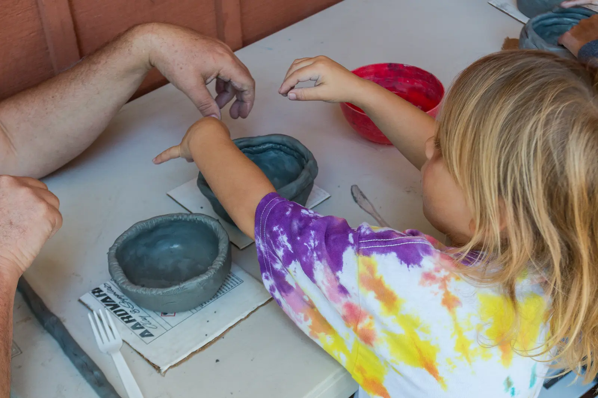
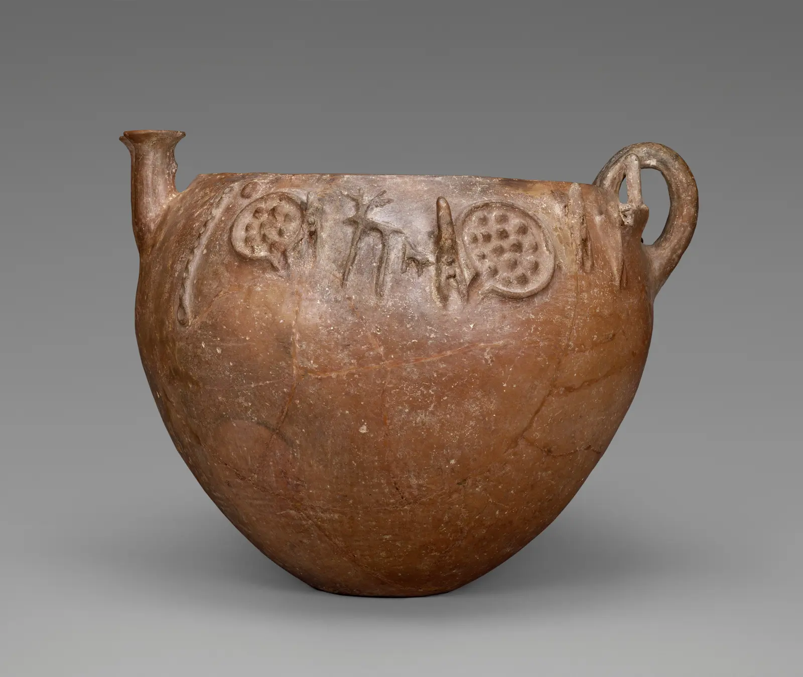
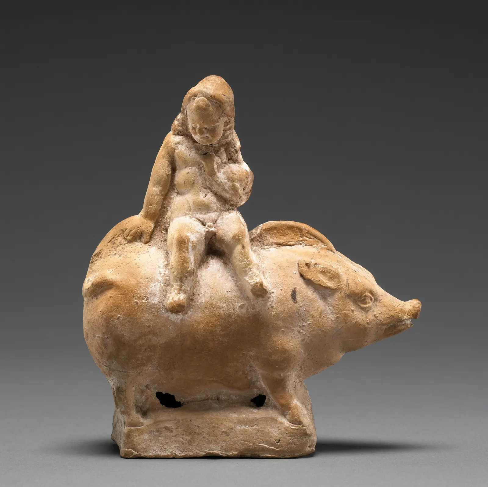
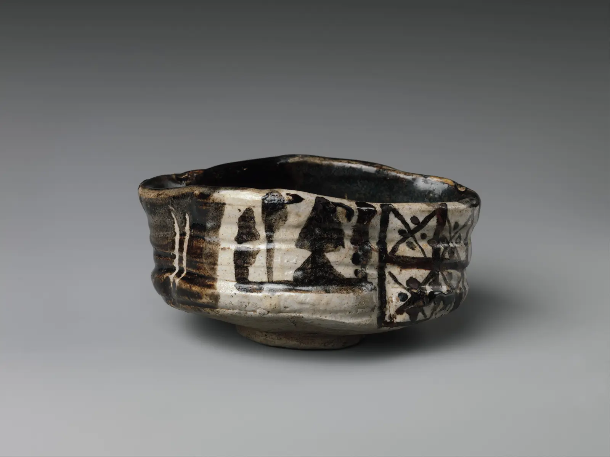

.jpg){kind=link}
Prerequisite
Complete Phase 1 or be able to identify workable, soft leather-hard, and firm leather-hard clay. Keep three small test pieces available for comparison.
Phase 02 · 5–7 hours
A pinch pot is not a beginner’s placeholder. It is a direct record of force. Learn to feel thickness, redirect pressure, and make three related forms with intention.

Before you begin
Complete Phase 1 or be able to identify workable, soft leather-hard, and firm leather-hard clay. Keep three small test pieces available for comparison.
You can create even walls, hold or change a profile deliberately, preserve a rim, and explain how each touch altered the form.
A pressure ladder, a three-profile study, a gesture cup, and a coherent three-form set with process notes.
Why does one pinch thin the wall while another only moves the whole pot?
Your outside finger supports the wall; the inside thumb compresses clay against it; both move together. Pressure without support stretches and weakens. Support without movement leaves dents.
Rotate the form instead of chasing one spot. Compare the drag and flex between opposite fingers. A thin area often feels quick and flexible while a thick area feels slow and resistant; perceived temperature is not a reliable thickness cue. Confirm with finger spacing, calipers where suitable, backlighting for thin translucent sections, or sacrificial sectioning. Verify by sectioning one practice pot.
Clay bodies and hand sizes differ. Avoid universal wall-thickness targets; judge evenness, structural support, intended scale, and firing requirements.
| Evidence | Likely cause | Next action |
|---|---|---|
| Thin band below rim | Thumb stayed in one height zone | Start each circuit lower; move both hands upward together. |
| Cracked rim | Rim drying or being pulled outward | Compress between finger and thumb; cover between rounds. |
| Heavy base ledge | Pinching began too high | Open a wider interior floor and compress the floor-wall transition. |
| Random dents | Pressure before support | Place the outside finger first, then meet it from inside. |
Silhouette carries mass and direction. Think in three zones: foot/base, belly/transition, and rim/ending. Change one zone at a time so you can attribute the result.

Start with three equal clay masses and the same opening diameter.
Full belly, inward shoulder, compressed rim. The eye is held inside.
Gentle outward wall, broad mouth, quiet rim. The form offers its interior.
Narrower base, rising wall, slight outward rim. The profile carries upward energy.
Photograph each at eye level against the same background. Trace its contour. Annotate where you pushed, supported, compressed, or rested the clay.
Useful marks reinforce direction, rhythm, or grip. Accidental marks interrupt them. Choose a visual rule—such as upward sweeps, paired thumb marks, or a quiet exterior—and repeat it consistently.
A lively surface can be structurally sound. Compress cracks closed while clay is responsive; do not merely smear wet slip over a weak split.
Support, compression, and coordinated movement; sectioning reveals thickness hidden from touch; profile, mass distribution, opening, rim, and directional gesture change the reading.
Inspiration · look comparatively
Compare a hand-built bowl whose rim becomes a sculptural stage, pressure through a mold, and a bowl deliberately compressed off-axis. Describe the evidence before naming the method.



Knowledge check · 3 questions
Choose one answer for each situation. Open a hint when needed; explanations appear after you check all three.
Phase checkpoint · 12 points
| Criterion | Developing · 1 | Competent · 2 | Intentional · 3 |
|---|---|---|---|
| Wall control | Major thin/thick surprises | Continuous, appropriate wall | Thickness changes serve the form |
| Profile | Shape drifts unintentionally | Profile matches stated aim | Transitions are controlled and expressive |
| Surface | Marks are unresolved | Consistent gesture rule | Gesture and quiet zones strengthen form |
| Diagnosis | Names symptoms only | Connects evidence to likely cause | Tests a targeted correction |
.jpg){kind=link}